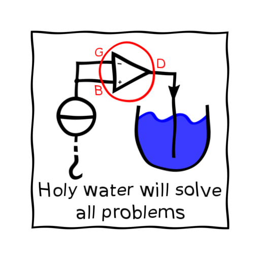

When presenting a visual representation of pretty much anything it is often much easier to draw straight lines with precise edges and a very clean look. Unfortunately this could signal a kind of confidence in whatever is represented you might not actually have. So in some cases it can be beneficial to use less precise visuals suggesting some uncertainty. This usually results in a style well known from xkcd.com where Randall Munroe (author of "what if?") presents nerdy topics using a ruff hand drawn look. (Notice that there are many precedents for this. For example: Khan Academy and Jörn Loviscach are both very successful with educational content presented in an unusually messy looking visual style)

This has been recognized by various entities, e.g. the python module matplotlib (an excellent plotting library) comes with a set of rc parameters that transform any figures style to imitate xkcd. (Just surround your plot code with a "with plt.xkcd():" block and see the results). The Image on the right demonstrates this style.
I reproduced the effect in OpenGL. My approach was quite simple:
This is quite a simple setup that depends on choosing a good Displacement Map D. Obviously, the Euclidian Norm of D shouldn't exceed some small value, otherwise elements of the input image would end up scattered over the entire output image. But the direction remains to be decided. I tried drawing randomly from a uniform distribution. But such directions look far too messy. Then I tried to give it a more natural look by drawing form a normal distribution instead. Still without satisfying results. I tried to slightly de-noise D by applying a Gaussian filter; unsuccessful. I tried the previous methods again to generate just a few values for my function than I interpolated (linear, quadratic, cubic, etc.) between those values to get D; this gives really ugly results. I tried to de-noise by taking the Fourier Transform convolving with parts of itself and applying the Inverse Fourier Transform. The awful result of this last method are displayed on the left (the Euclidian Norm of D increases over time).
I had thought about and dismissed the idea of using sinusoids because I was confident that sinusoids would look far too regular. I had experienced a similar problem when I tried to implement a "under water" shading effect in my PyOpgenGL Graphics Engine. (ThinMatrix experienced similar issues when implementing low poly water for the game equinox). But after the drawing form random distributions approach went as described above, I decided to have a go at sinusoids anyway and I am actually quite happy with the results.
The animation on the right, shows the effect of this final harmonic wave like transformation. So the Displacement Map D used here is given (in standard Cartesian Coordinates) by the function:
Where λ is constant (0.2 in the animation on the right, with the x and y coordinates reaching from 0 to 1), and t is an indicator of the maximum length displacement vectors can have (Note that t isn't exactly this max value). In the animation t increases from 0 to 5% over time.
Looking at the final equation the similarities to e.g. a field of normal vectors on moving water are quite obvious (a wave at a specific point in time, weirdly using the L1 metric rather than L2). So the result can be thought of as an approximation of what you would see if the input image lay on the floor of a lake and you were looking through the lakes surface down to your input image.
Unfortunately, this is far from perfect and it certainly isn't what matplotlib does. Here is a list of the methods main floors:
| Input | Output |
|---|---|
|
|
 |